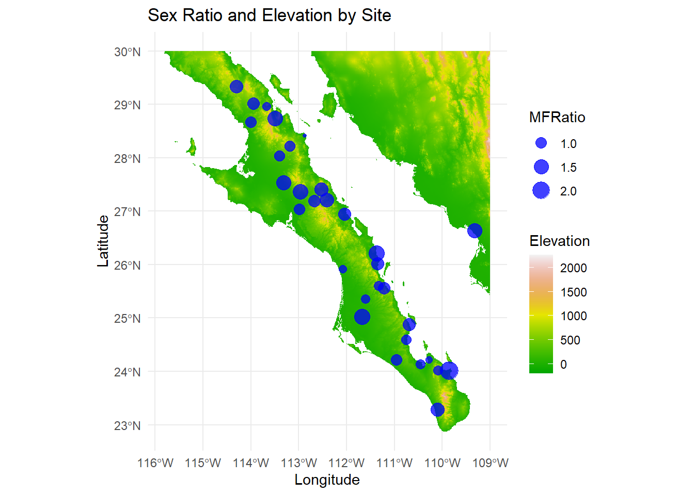

#find bounding box
read_csv( beetle_url ) |>
st_as_sf( coords=c("Longitude","Latitude"),
crs=4326 ) -> beetles
#beetles |> st_bbox()
#cut the extent
baja_extent <- extent( c(-116, -109, 22, 30 ) )
#baja_extent
#define raster
r <- raster( raster_url)
#crop
baja_crop <- crop( r, baja_extent )
plot( baja_crop, xlab="Longitude", ylab="Latitude")
coords <- st_coordinates(beetles)
text(coords[, 1], coords[, 2], labels=beetles$Site, pos=3, col="red", cex = 0.7)Raster Data Homework
Questions
Load the raster and point data in and crop to an appropriate size to display the locations of the sampling plots and make a label for each site.
Use the click() function to crop the raster and filter the sites to include only the sampling locations that are in the Cape regions (e.g., south of site labeled #75). Plot the raster of elevation and all cape region locales with sex-ratio represented as the size of the plot symbol.
The peninsula of Baja California is divided into the States of Baja California Norte and Baja California Sur. The border between these states is at 28° Latitude. Divide the sample locations into groups based on which state they are located in and plot the average sex ratio of the sample sites partitioned by each site.
Is there a relationship between the observed sex ratio and the elevation at that site? Plot these, and in the text, perform a correlation test (cor.test()) and report the values as if you were writing them up in a results section.
1. Cropping
2. Click Function
#reproject
new.proj <- "+proj=utm +zone=12 +ellps=GRS80 +towgs84=0,0,0,0,0,0,0 +units=m +no_defs "
r.utm <- projectRaster( r, crs=new.proj)
#plot( r.utm, xlab="Easting", ylab="Northing" )
#crop w click
#click(r.utm, xy = TRUE, n = 4) -> coords.r #Have to click within the land mass where there is data.
#filter sites
beetles |>
mutate( latitude = st_coordinates(geometry) [,2],
longitude = st_coordinates(geometry)[,1]) -> Q2
Q2 |>
filter( latitude < 24.58843) -> Q2
Q2baja_crop.df |>
ggplot() +
geom_raster( aes( x = Longitude,
y = Latitude,
fill = Elevation)) +
coord_equal() +
theme_minimal() +
scale_fill_gradientn( colors = terrain.colors(100)) +
ggtitle ("Sex Ratio and Elevation by Site") +
geom_sf( aes(size = MFRatio ),
data = Q2,
color = "blue",
alpha = 0.75) Coordinate system already present. Adding new coordinate system, which will
replace the existing one.3. Average Sex Ratio by Norte and Sur
beetles |>
mutate( latitude = st_coordinates(geometry) [,2],
longitude = st_coordinates(geometry)[,1]) -> beetles
beetles |>
mutate(SiteNS = case_when(
latitude > 28 ~ "Norte",
latitude < 28 ~ "Sur"
)) -> beetles
beetles |>
group_by(SiteNS) |>
summarize( `Avg MF Ratio` = mean(MFRatio))->Q3
ggplot(Q3,
aes(`Avg MF Ratio`,
SiteNS)) +
geom_col( fill = "blue",
color = "black") +
labs (title = "Average Male to Female Ratio by State",
x = "Average M:F Ratio",
y = "State")4.Relationship Between Sex Ratio and Elevation by Site
baja_crop |>
rasterToPoints() |>
as.data.frame() |>
transmute(Longitude=x,
Latitude=y,
Elevation=alt_22) -> baja_crop.df
baja_crop.df |>
ggplot() +
geom_raster( aes( x = Longitude,
y = Latitude,
fill = Elevation)) +
coord_equal() +
theme_minimal() +
scale_fill_gradientn( colors = terrain.colors(100)) +
ggtitle ("Sex Ratio and Elevation by Site") +
geom_sf( aes(size = MFRatio ),
data = beetles,
color = "blue",
alpha = 0.75) Coordinate system already present. Adding new coordinate system, which will
replace the existing one.
4b. Cor.test
library(raster)
# Check CRS
#print(st_crs(beetles))
#print(crs(baja_crop))
baja_crop.utm <- projectRaster( baja_crop, crs=new.proj)
beetles <- st_transform(beetles, crs(baja_crop.utm))
#print(class(baja_crop.utm)) # Should show "RasterLayer"
#print(head(coords))
#print(extent(baja_crop.utm)) # Print raster extent
beetles$elevation <- raster::extract(baja_crop.utm, st_coordinates(beetles))
# :: is another way to call in a function which is common in name
cor.result <- cor.test (beetles$MFRatio, beetles$elevation)
print(cor.result)
Pearson's product-moment correlation
data: beetles$MFRatio and beetles$elevation
t = -0.76979, df = 29, p-value = 0.4476
alternative hypothesis: true correlation is not equal to 0
95 percent confidence interval:
-0.4721731 0.2240665
sample estimates:
cor
-0.1415088 We found there was no significant relationship between elevation and the ratio of males to female beetles (Pearson Correlation, \(\rho\) = 0.4476472).